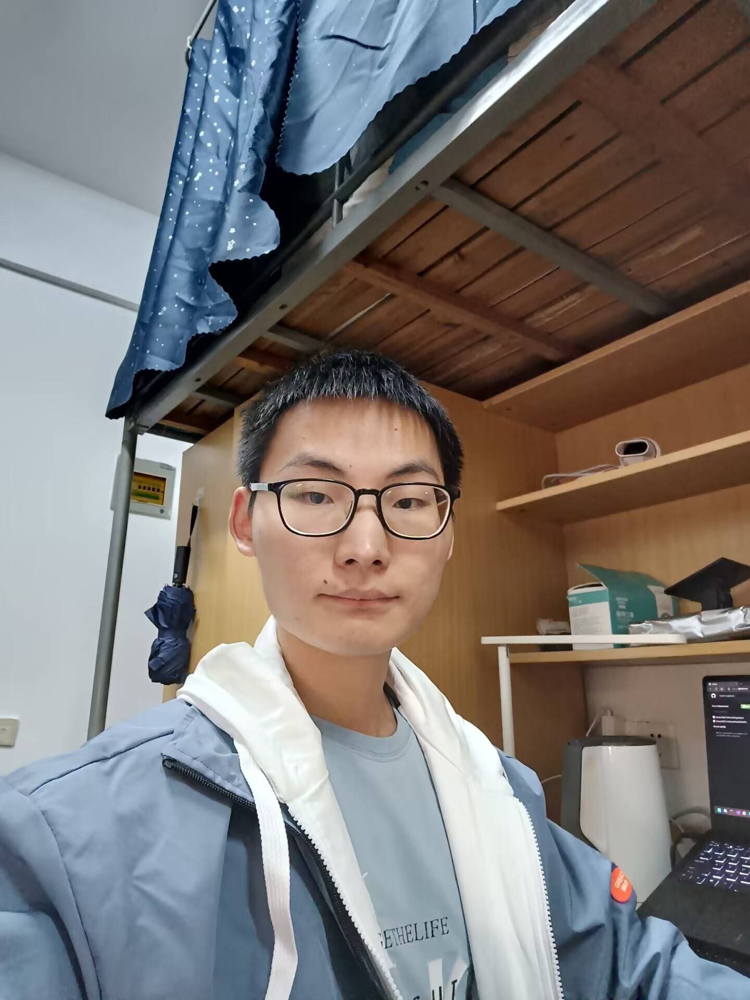

Feihong Shen (沈飞鸿)
|  | Master student, |
About me
I am currently an incoming Master student in PALM Lab at Southeast University, where I am supervised by Prof. Hao Chen.
I obtained my B.Sc. degree in the School of Computer Science in June 2022 from Southeast University.
Research Interests: Computer Vision, Muliti-modal, Self-supervised Learning, Machine Learning.
Educations
 |
M. S., Southeast University (SEU), Nanjing, Jiangsu [2022.9 ~ 2025.6]
|
|
|
B. Sc, Southeast University, Nanjing, Jiangsu [2018.9 ~ 2022.6]
|
Projects
-
Modality-Balanced Contrastive Learning for RGB-D Salient Object Detection
Hao Chen, Feihong Shen, Lichuang Zhang.
We propose a contrastive learning framework for the fusion of RGB and depth images, and apply the framework to RGB-D SOD and RGB-D segmentation tasks.
[pdf] [code]
-
Hierarchical Cross-modal Transformer for RGB-D Salient Object Detection
Hao Chen, Feihong Shen.
We improve the Transformer-based RGB-D SOD framework, and achieve SOTA on 8 benchmarks。
[pdf] [code]